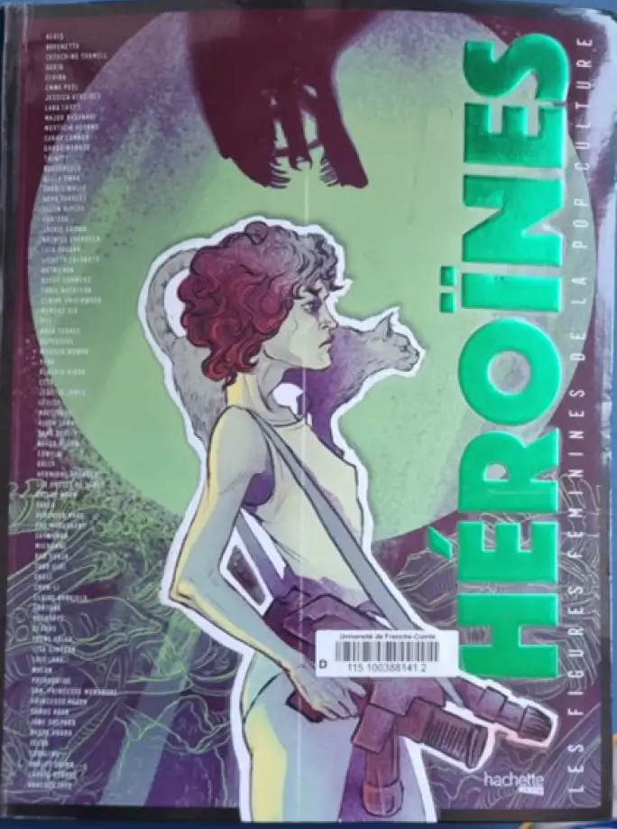

Oeuvre
Héroïnes
Cette Œuvre a pour but de valoriser tout le personnage féminin crée à ce jour. Explorant tous les médias, du cinéma à la bande dessinée, sans oublier la littérature, les jeux vidéo ou encore les séries télévisées.
qui
En 2017 une équipe exclusivement féminine faites pour référencer une rendre gloire aux différents personnages féminin. Les auteurs : Marilys Vallet, Margot Poujol, Mathilde Degore , Lise Benkemoun , Bounthay Sulivay, Mélanie Bourdaa Célia Haro , Nazrie Djedoui. Les illustratrices Abigail Larson, Peach Momoko , Lenka Simeckova, Maguerite Sauvage , Chiara Di Francia , Sibylline Meynet. Ce sont ces femmes qui ont rendu la lecture et la visibilité de cet ouvrage
Pourquoi
"Les figures héroïques féminines présentes dans ces dans ces pages sont de toutes natures, guerrières déesse, fragiles, mère ou meurtrière. Elles incarnent toutes les facettes du féminin et elles démontrent aussi l'évolution du combat des femmes et les changements de la société qui tarde à trouver un équilibre pourtant essentiel. Elles prouvent aussi la porosité manifeste qui existera toujours entre le réel et l'imaginaire car l'un exerçant toujours une magie réelle un sur l’autre, au point de ne plus très bien savoir situer le point de bascule entre les deux. Toutes ces des icones, inspirantes et inspirées, tous ces portraits. Sont l'œuvre de femmes aux parcours divers et variés, toutes ces illustrations aussi. Simone de Beauvoir annonçait dans DEUXIEME SEXE "Il est très difficile à une femme d'agir en égale de l'homme. Tant que cette égalité n'est pas universellement reconnue et concrètement réalisée.". Toutes ces héroïnes sont encore imaginaires t sont les égales des hommes. Elles leur sont mêmes parfois supérieures. La façon dont nous nous en inspirons, dont nous en réclamerons leur permettra, inversement d'agir en profondeur sur le réel. " Nous confie Emilie Colas cerveau derrière cette opération
Les figures féminines de la pop culture
Depuis une dizaine d'année les films avec des rôles principaux féminin font un bond en avant. Plusieurs exemples exemple sont bon comme l'un des premiers de notre ère : Lara Croft : Tomb Raider 2001 Catwoman 2003 Lara Croft : Tomb Raider, le berceau de la vie 2003 Street Fighter : Legend of Chun-Li : 2009 Maléfique 2014 Wonder Woman 2017 Tomb Raider 2018 Maléfique : Le Pouvoir du mal 2019 Captain Marvel 2019 Terminator : Dark Fate 2020 Mulan 2020 Birds of Prey et la fantabuleuse histoire de Harley Quinn : 2020 Wonder Woman 1984 :2021 Black Widow 2021 Ou encore des séries tel que : Supergirl 2015 Marvel : Agent Carter : 2015 Marvel's Jessica Jones : 2019 Batwoman 2019 WandaVision 2021
/toute.webp)
Tous ces films et toutes ces séries ont eu pour but de réduire à néant les stéréotype qui réduise la place de la femme a la cuisine ou la faiblesse de la femme. Et de montrer à quel point les femmes aussi peuvent être fortes tout en ayant bon cœurs. Petit à petit les chose en changer et fort heureusement afin que nous évoluions nous et les futures générations.

Glossaire
Les femmes et les comics
Nous allons nous concentrer plus particulièerments sur 2 héroines de deux grandes maisons d’éditions .
.webp)
Gal Gadot
Gal Gadot aussi connu pour etre l’incarnation de wonder woman sur nos écrans. Elle n’est pas que sa vous pourrez en appredre plus sur elle ici....
.webp)